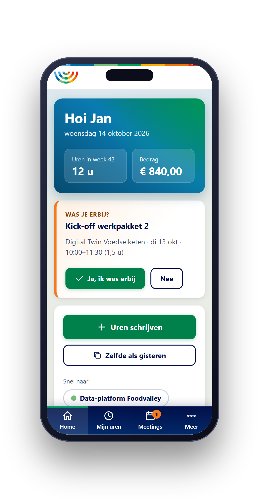
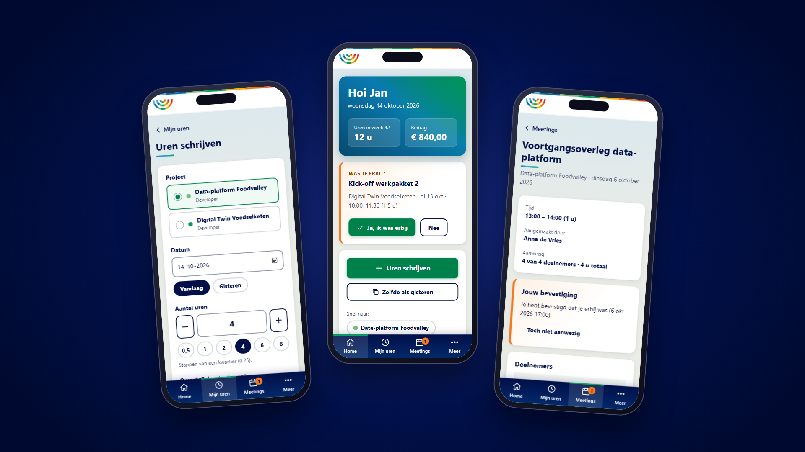

Sprint 3: urenregistratie voor ICT Campus Foodvalley
Een mobiel prototype waarmee medewerkers hun uren schrijven en meetings met één vinkje verantwoorden voor de subsidie, in plaats van een Excelsheet.
In het kort
Van Excelsheet naar uren schrijven in drie tikken
ICT Campus Foodvalley in Veenendaal werkt met subsidies en moet kunnen verantwoorden waar uren heen gaan. Medewerkers schrijven die uren nu in een Excelsheet. De opdracht: een app die dat zo makkelijk mogelijk maakt, op de telefoon, voor een klein groepje mensen.
Ik heb een werkend prototype gebouwd. Een medewerker kiest een project, geeft het aantal uren aan en slaat op. Het uurtarief volgt automatisch uit zijn rol op dat project. Daarnaast kunnen deelnemers van een meeting met één vinkje bevestigen dat ze erbij waren, en rolt daar een PDF uit die als bewijslast voor de subsidie dient.

Het prototype

Hoe ik het heb aangepakt
Eerst begrijpen wat er echt nodig is, dan bouwen
Ik begon met een meeting met de opdrachtgever, voorbereid met een vragenlijst over gebruikers, de huidige Excelsheet, subsidies, uren invoeren, exporteren en techniek. Het gesprek nam ik op en liet ik transcriberen, maar die transcriptie was slecht verstaanbaar. Daarom heb ik mijn aantekeningen bewust opgesplitst in wat de opdrachtgever wil, wat we hebben afgesproken en wat nog te bevestigen is, bijvoorbeeld of het om één subsidie met meerdere projecten gaat en wie meetings aanmaakt.
Van aantekeningen naar een bouwprompt
Op basis daarvan heb ik beslissingen vastgelegd: een webapp voor de telefoon in plaats van een app store-app, inloggen met e-mail en wachtwoord op uitnodiging, en twee rollen (medewerker en beheerder) waarbij de toegangsregels later in de database worden afgedwongen. Daarna schreef ik een uitgebreide bouwprompt met het datamodel, de schermen, de huisstijl en de acceptatiecriteria. Alles wat ik zelf had ingevuld zonder dat het zeker was, markeerde ik als aanname, zodat ik die aan de opdrachtgever kon voorleggen.
Bouwen met Claude Code, in stappen
Het prototype is in stappen gebouwd met Claude Code: eerst de datalaag en toegangsregels, dan uren schrijven, projecten en tarieven, meetings en de PDF, en als laatste het overzicht en de export. De data staat nu in de browser, achter één dun bestand, zodat er later een echte database (Supabase) in geschoven kan worden zonder de schermen te herschrijven. Het uurtarief wordt bij het schrijven vastgelegd, zodat een tariefwijziging oude uren niet verandert. Dat is precies wat je voor een subsidieverantwoording nodig hebt.
Zelf getest heb ik op een telefoonbreedte van 375 pixels en op desktop. Ik heb gecontroleerd of een medewerker echt niets van andermans uren kan zien of wijzigen, of de PDF netjes op A4 past, en of de kleuren van de huisstijl voldoende contrast hebben. Dat laatste bleek niet zo: witte tekst op het groen van de website haalt de norm niet, dus knoppen kregen een donkerder groen.
Wat ik heb geleerd
Onzekerheid benoemen is ook een resultaat
Maak je aannames zichtbaar. Met een slechte transcriptie kon ik niet alles zeker weten. Door aannames te markeren en een lijst vragen voor de opdrachtgever mee te leveren, voorkom ik dat het prototype stilzwijgend iets anders doet dan gewenst.
Een prototype is geen product. Inloggen, e-mail, back-ups en een echte database ontbreken bewust. Het helpt om vooraf op te schrijven wat er voor een productieversie nog mist, zodat het duidelijk blijft wat de opdrachtgever te zien krijgt.
Makkelijk voor de gebruiker betekent veel keuzes maken voor de gebruiker. Standaard het laatst gebruikte project, snelknoppen voor uren en een tarief dat je niet kunt kiezen: elke optie die weg is, scheelt een tik. Dat is minder flexibel, maar precies wat de opdrachtgever vroeg.
Ethiek & data
Welke gegevens zijn gevoelig, en hoe ga ik er verantwoord mee om?
Een urenregistratie lijkt onschuldig, maar bevat namen, werktijden en uurtarieven. Dat laatste lijkt sterk op loongegevens: niet iedereen hoeft te zien wat een collega verdient. Daarom heb ik vooraf nagedacht over wat ik met die gegevens doe, en wat ik bewust niet doe.
Wat ik met AI heb gedeeld
Bij het bouwen met Claude Code heb ik geen persoonlijke of gevoelige gegevens gedeeld. De AI werkte met de wensen en werkwijze van de opdrachtgever, niet met echte medewerkers, uren of tarieven. Alle namen, uren en tarieven in het prototype zijn verzonnen. Het geanonimiseerde Excelbestand van de opdrachtgever is pas bruikbaar als het binnen is, en ook dan geldt: eerst kijken of het echt anoniem is voordat het ergens in een AI-tool terechtkomt.
Wat ik in het prototype heb ingebouwd
Een medewerker ziet en wijzigt alleen zijn eigen uren; een beheerder ziet alles. Die regels zitten in de datalaag, zodat ze later één-op-één naar de database kunnen. Het uurtarief wordt bij het schrijven vastgelegd en een medewerker kan het niet zelf kiezen of aanpassen. Op de meeting-PDF, die ook als bewijs naar buiten kan, staan bewust geen tarieven. En bij "wachtwoord vergeten" meldt de app niet of een e-mailadres bekend is, zodat niemand kan uitzoeken wie er een account heeft.
Wat er voor een echte versie moet gebeuren
Veilig omgaan met data is hier nog deels een plan, geen resultaat. Voor productie kies ik een database in een EU-regio, inloggen alleen op uitnodiging en toegangsregels die de database zelf afdwingt, zodat ze niet te omzeilen zijn via de app. Ook moet duidelijk zijn wie verantwoordelijk is voor de gegevens (de opdrachtgever), welke afspraken er zijn met de partijen die de data verwerken, en hoe lang uren bewaard moeten worden. Dat laatste staat als open vraag voor de opdrachtgever in mijn lijst; de rest moet nog worden uitgezocht.
AI-uitvoer blijft mijn verantwoordelijkheid
Dat de AI de code schrijft, betekent niet dat ik het niet hoef te controleren. Juist de toegangsregels heb ik zelf getest: kan een medewerker andermans uren zien, wijzigen of verwijderen? Daarbij bleef het niet bij vertrouwen op wat de AI zei dat het deed.
Leeruitkomsten
Wat deze sprint aantoont
LU2 · Praktijkoplossing. Het prototype lost een echt probleem op voor een echte opdrachtgever: uren verantwoorden voor een subsidie zonder Excelsheet, inclusief een PDF als bewijslast per meeting.
LU3 · Ethiek. Ik heb beoordeeld welke gegevens in dit project gevoelig zijn (namen, uren en tarieven), wat ik wel en niet met AI deel, en welke maatregelen nodig zijn voor een echte versie. Daarbij heb ik ook benoemd wat nog niet geregeld is.
LU4 · AI-tools. Ik heb Claude Code ingezet om het prototype in stappen te bouwen en te testen, en AI gebruikt om mijn aantekeningen en vragenlijst te structureren. De richting en de keuzes bepaalde ik zelf.
LU5 · Zelfsturend werken. Ik heb de meeting voorbereid, zelf bepaald wat wel en niet in het prototype hoort, en de open vragen en aannames vastgelegd om met de opdrachtgever te bespreken.
Bekijk ook
Tip: bekijk het prototype op je telefoon, of maak je browservenster smal. Je kunt met één klik van gebruiker wisselen via de demo-schakelaar.